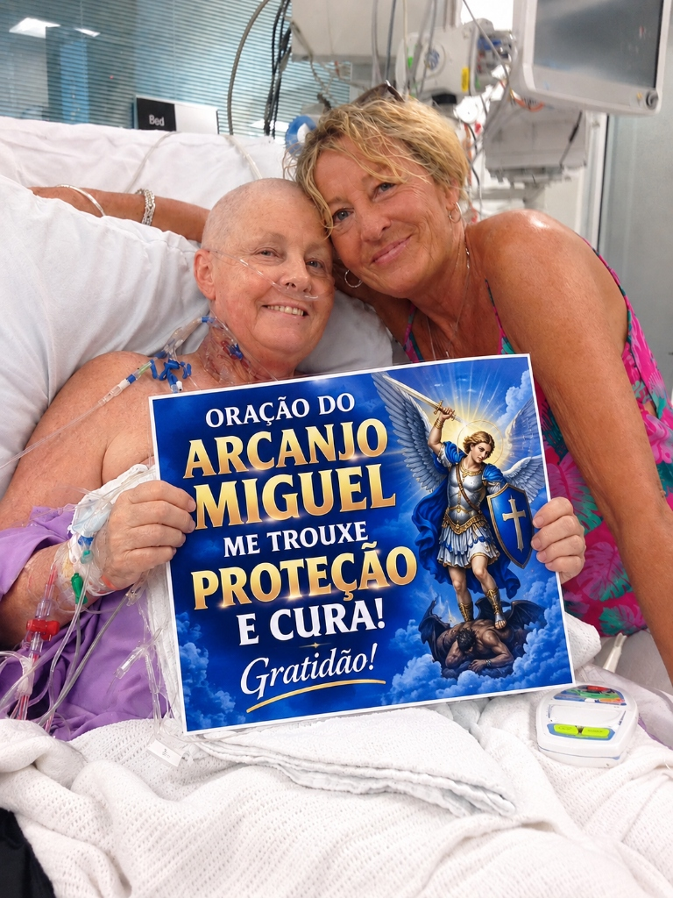
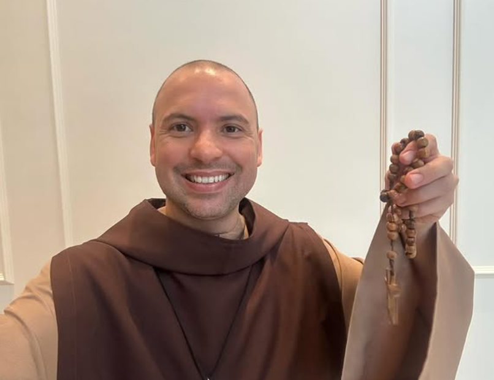
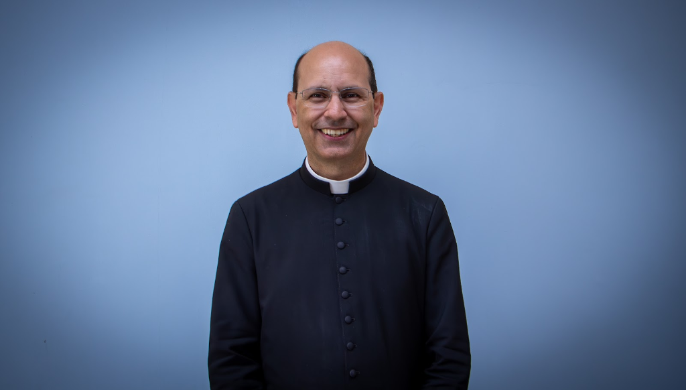
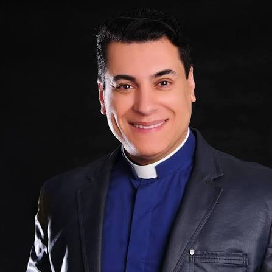
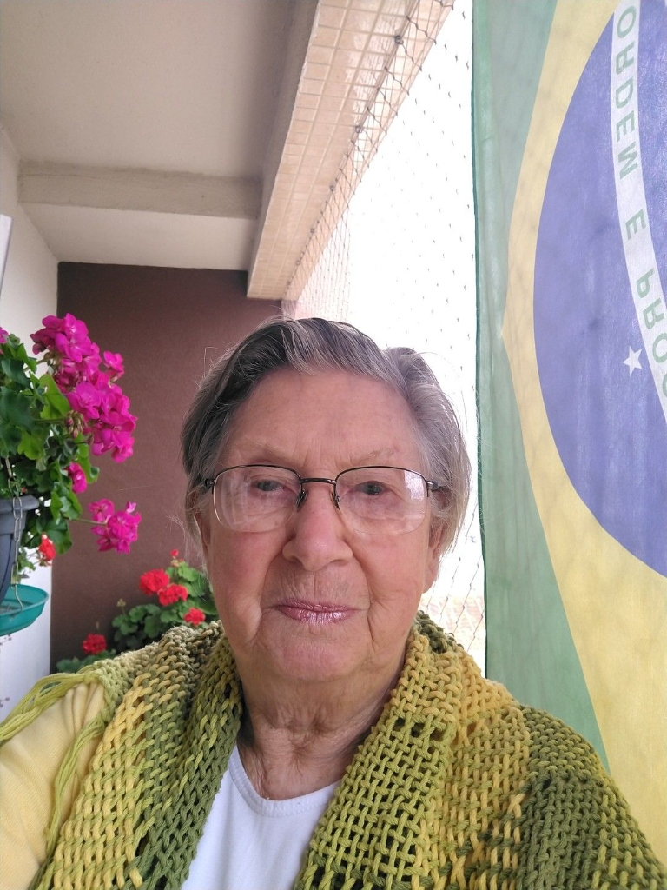

O Papa Francisco tornou pública uma antiga e poderosa oração de intercessão de São Miguel Arcanjo, guardada por séculos sob a tutela da Igreja. A prece, que tem sido apontada por teólogos e historiadores como uma chave espiritual para o rompimento de ciclos de escassez e destravamento financeiro, já começou a ser praticada por milhares de pessoas no Brasil e no mundo.
Segundo o relato oficial divulgado, a oração atua diretamente na quebra de amarras espirituais, afastando a angústia provocada por cobranças, desemprego e perdas materiais inesperadas. Veja abaixo o vídeo com a apresentação completa e as orientações para realizar a oração em sua casa:
A prática consiste em uma invocação de 3 minutos realizada pela manhã, direcionada a colocar a espada de São Miguel Arcanjo à frente da vida financeira, do trabalho e do lar daquele que crê.
Relatos de transformação: fiéis registram bênçãos e conquistas financeiras
Por todo o país, milhares de lares que viviam momentos de incerteza e dívidas relatam transformações profundas após a prática da oração. Nas redes sociais e canais de atendimento, fiéis compartilham registros comoventes de cura, abundância e conquistas materiais alcançadas sob a intercessão de São Miguel Arcanjo:

O guia oficial com as palavras sagradas originais e o áudio da Oração de São Miguel Arcanjo foi disponibilizado na íntegra para os fiéis:
Acessar o Guia e Áudio da Oração
COMENTÁRIOS (94)

A Oração Sagrada de São Miguel Arcanjo e as frequências divinas têm sido instrumento de milagres em tantos lares. Já acompanhei pessoas que encontraram cura, reconciliação e até libertação de males antigos, simplesmente rezando e ouvindo. O som age com poder no espírito.

Posso afirmar com toda convicção: essas orações e frequências são um canal de milagres. Vi pessoas se transformarem profundamente ao escutá-las com abertura. O som vibra onde as palavras não chegam. Que ninguém perca essa graça!

Eu vivi exatamente o que está sendo mostrado nesse vídeo. A Oração Sagrada não é apenas um áudio, é uma experiência espiritual real. Quem escutar com fé vai perceber a mudança. Assista até o final e se permita viver isso!
Essa oração tocou meu coração de uma forma que não sei explicar. É como se a bênção alcançasse um lugar profundo dentro da gente. Espero que mais pessoas tenham a oportunidade de ouvir isso. É forte demais.

Eu já estava conformada com a solidão e as contas atrasadas, mas depois de tantas recomendações, decidi escutar a oração. Em pouco tempo, portas de trabalho se abriram e meu filho voltou a me procurar. Foi um presente de Deus!